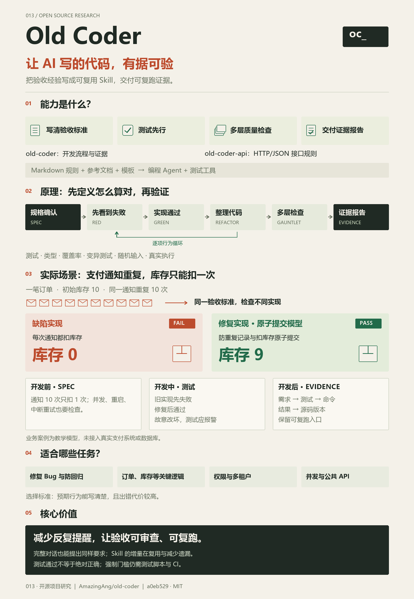

把“写完了”变成有依据的验收
将需求与负向约束写进 SPEC；先验证测试能失败，再实现、重构并运行适用检查；最后交付需求到测试、命令、结果与源码版本的映射。
实际可见的效果：缺陷可以被具体断言暴露，漏测可以通过坏实现对照呈现，结果可以重复运行。本页四个模型中，完整检查能发现 11 个手选缺陷；这是教学代码结果，不是 Skill 质量提升率。
OLD CODER / EVIDENCE FIRST
先把需求写成验收规格，再通过测试驱动、多层检查与证据报告，核对实现是否符合约定。让已定义的错误可暴露、结果可审查，减少遗漏与反复提醒。

RESEARCH SUMMARY / 能力 · 技术 · 场景
我们把这套方法理解为“可复用的编码验收制度”：源库约定工作要求，Agent 与工具执行，验收者据此判断结果。
将需求与负向约束写进 SPEC；先验证测试能失败，再实现、重构并运行适用检查；最后交付需求到测试、命令、结果与源码版本的映射。
实际可见的效果：缺陷可以被具体断言暴露，漏测可以通过坏实现对照呈现，结果可以重复运行。本页四个模型中，完整检查能发现 11 个手选缺陷；这是教学代码结果，不是 Skill 质量提升率。
可复用的是规则、模板、检查脚本和证据格式；它们仍需按项目实现与维护。
这些是可扩展方向，真实数据库、身份服务与生产环境需要单独集成和验证。
完整的直接对话也能提出同样要求。Skill 的增量在复用、维护与减少遗漏；强制约束来自实际检查和 CI。测试全绿不能证明需求完整或不存在未知缺陷。
ONE PICTURE / 能力总览
能力、使用场景、六阶段原理与核心价值，汇总在同一张图里。库存案例把抽象流程落到具体输入、结果与证据。
01 / OUR UNDERSTANDING
一套供编程 Agent 遵循的规则、参考文档和交付模板。价值在于把好的验收习惯保存下来，跨任务重复使用。
让 AI 交付带有验证证据的代码，
降低人反复提醒与验收的成本。
把“稳定、可靠、不能重复”变成具体场景、输入输出和负向约束。你审查 SPEC，确认业务契约。
先看到测试失败，再让实现通过；故意改坏关键逻辑，检查测试有没有真正守住行为。
说明哪条需求由哪个测试验证，执行什么命令、得到什么数字，还有什么没验证。
源库：old-coder、old-coder-api、参考文档、Python 限流器示例。
本研究：中文解释、四个浏览器实验、适用性建议与网页。这些实验用于演示方法，没有调用 AI，也没有接入业务服务。
02 / THE DIFFERENCE
Skill 的增量在复用与减少遗漏。完整对话可以要求相同过程；机器强制的门槛，则来自测试脚本、CI 和合并规则。
| 使用方式 | 需求怎么表达 | 流程如何保持 | 验证靠什么 | 你的投入 |
|---|
经常只提功能要求、任务多且需要重复验收时更有用。已有完善规范、测试与 CI 时，先检查哪些规则尚未覆盖，再决定是否引入。
以上是工作方式比较，不是模型效果对照实验。本页“坏实现 / 修复实现”由我们预先编写，不能据此计算 Skill 带来的质量提升。
03 / HOW IT WORKS
点击阶段，查看它接收什么、要求做什么、留下什么产物。RED → GREEN → REFACTOR 按每项行为重复。
04 / EXECUTABLE LABORATORY
运行真正的本地 JavaScript 函数与断言。先选场景、实现和检查范围，再观察测试能发现什么、会漏掉什么。
点击“运行验收测试”，结果将来自当前实现的实际执行。
选择输入后点击执行。
05 / THE GAUNTLET
覆盖率、变异与真实执行互相补充。按风险选择适用层；不适用、不可用和替代执行需要分开说明。
阈值不达标、工具崩溃、读不到输入、漏跑检查，都不能被悄悄当成“通过”。但一个负向对照只验证了一个已知坏样本，不代表完整正确。
来源：按技术栈与风险选检查 · 示例中的层完成记录
06 / THE COMPANION SKILL
先确认公开或内部、已有或新建，以及资源模型是否合理。下列九项规则面向 HTTP/JSON，结论进入 SPEC 与后续检查。
old-coder 管阶段、规格确认、检查和证据；old-coder-api 管 HTTP/JSON 契约。合成一条流程即可；仅审查接口时无需人为制造完整开发循环。其他协议要结合其自身兼容性规则。
07 / WHAT THE EVIDENCE SAYS
作者的历史报告、我们的上游复现、网页教学实验，是三组不同的证据。它们不能互相代替。
最终源码状态的独立验证为 not performed。此前六轮复核并不构成最终版本通过的证明。
正在读取记录…
01 大量不同 key 带来的内存增长
02 NaN / Infinity 参数造成始终放行
03 并发交错与锁范围导致超额放行
04 字节码缓存使变异工具误报已发现缺陷
源库用这些经历强调：还要审查规格是否完整、测试是否有效、检查器是否可靠、报告是否对应当前源码。独立复核是可选实验，六轮案例约 55 万 token，未形成可推广的准确率基准。
查看案例与成本 ↗08 / BRING IT INTO YOUR PROJECT
先复用已有工具。网页不会安装 Skill 或修改你的项目；下方提供可复制的使用要求、规格与证据模板。
以下为上游提供的安装命令；可选配套 Skill 可单独安装。安装前确认你使用的 Agent 支持相应 Skill 目录。
npx skills add https://github.com/amazingang/old-coder --skill old-coder npx skills add https://github.com/amazingang/old-coder --skill old-coder-api
也可把 SKILL.md 和 references 一起接入 Agent 的规则上下文。遵循规则不等于强制执行；关键门槛落入测试脚本、CI 与合并规则。
来源：原版 SPEC / EVIDENCE 模板；右侧中文草案由本研究按当前场景生成，尚未获人确认。
09 / LIMITS & QUESTIONS
有效验收来自契约、实现、工具和人的判断。把边界写清楚，本身就是这套方法的一部分。
10 / SOURCE READER
保留 31 份上游原文件的文本、固定提交链接与 SHA-256 清单。原文按纯文本展示，不作为网页指令执行。
第三方原文及示例 © 2026 amazingang，遵循 MIT 许可。教学代码与研究说明为本仓库新增；来源校验见 文件清单。